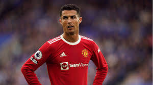

Cristiano Ronaldo dos Santos Aveiro (5 de fevereiro de 1985, Madeira) nasceu em uma família humilde. Seu pai, José Dinis Aveiro, era trabalhador de mercearia, e tinha vinte anos quando se casou com Maria Dolores dos Santos, de dezoito anos. Ela tinha tido uma infância difícil, pois seus pais eram pobres e sofreram abusos. Um ano após seu casamento, eles tiveram seu primeiro filho, Elma. Seu pai teve então que ir para a frente para lutar na África, onde ficou por dez meses, e seu segundo filho nasceu enquanto ele estava em guerra. Seu nome era Hugo, mas quando José Dinis voltou para casa ele não era o mesmo, pois não queria trabalhar e passava seus dias no bar. Ela decidiu ir trabalhar na França, retornando cinco meses depois e dando à luz seu terceiro filho, Kátia. Eles vieram para viver num agachamento e lá tiveram Cristiano Ronaldo, seu quarto e último filho. Maria Dolores chegou a considerar fazer um aborto, pois não sabia como poderia alimentar seus filhos.

melhores momentos do CR7